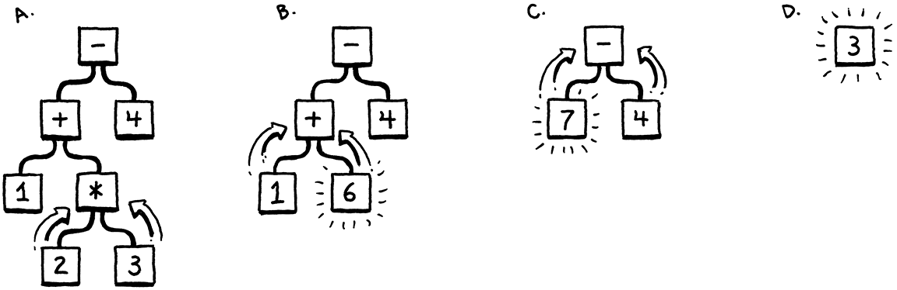
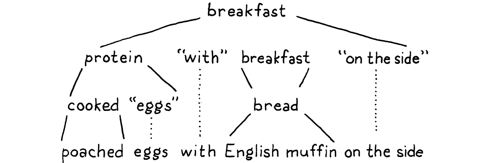
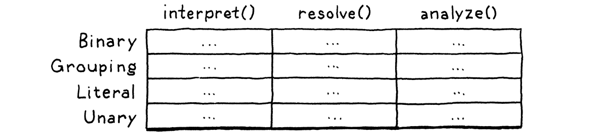
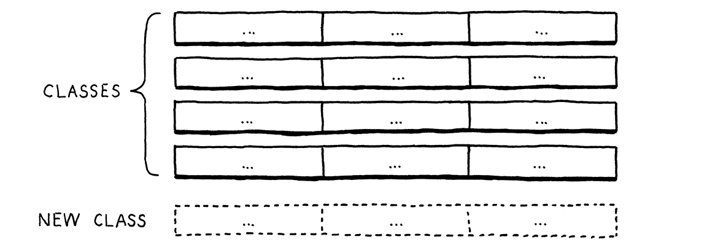
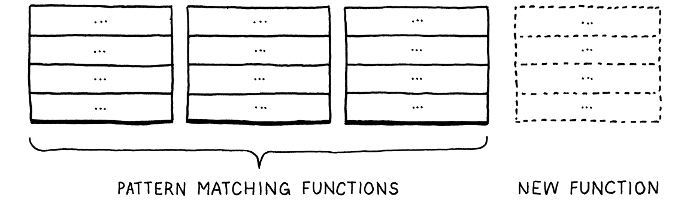
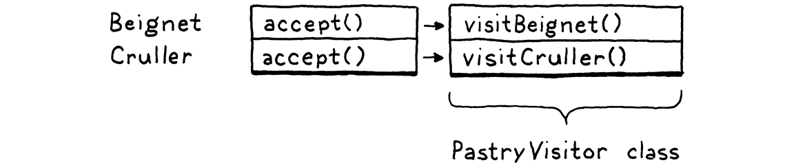

表示代码
对林中栖居者而言，几乎每一种树都有自己的嗓音，也都有自己的样貌。
托马斯·哈代，《绿树荫下》
在上一章里，我们把原始源码当成一个字符串，变换成了一种稍微高层次的表示： 一串词法单元。下一章要写的语法解析器会接过这些词法单元，再一次把它们变换成 一种更丰满、更复杂的表示。
要产出那种表示，我们得先把它定义出来——这就是本章的主题。一路上，我们会讲一点形式文法背后的理论、亲身体会函数式和面向对象的差别、走一遍几个设计 模式，再做一点元编程。
在做这一切之前，先把注意力放回主要目标——代码的表示。它应该让语法解析器容易产出， 让解释器容易消费。如果你还没写过语法解析器或解释器，这两条要求大概没什么启发。 那就靠直觉来吧。当你扮演一个人类语法解析器的时候，你脑子里在干什么？你在脑子里是怎么 求值这样一个算术表达式的：
1 + 2 * 3 - 4
因为你懂运算顺序——就是那个「Please Excuse My Dear Aunt Sally」（PEMDAS）的老口诀 ——所以你知道乘法比加法或减法先算。把这种优先级可视化的一种办法是画一棵树。叶子节点是 数字，内部节点是运算符，每个运算符的每个操作数各占一个分支。
要算出一个算术节点的值，你得先知道它那些子树的数值，所以得先把子树算出来。也就是说， 你得从叶子一路往根上走——一次后序遍历：

我要是丢给你一个算术表达式，画出这么一棵树来易如反掌。反过来给你一棵树，你也能不费吹灰 之力把它算出来。所以直觉上，我们代码的一个可行表示就是一棵树， 跟这门语言的语法结构——也就是运算符的嵌套——一一对应。
那么我们得把那个文法说清楚一点。和上一章的词法文法一样，句法文法背后也有一大堆理论。 这一次我们比讲扫描时钻得更深一点，因为事实证明它是整个解释器里到处都用得上的工具。我们从 乔姆斯基层级往上挪一层开始……
5 . 1上下文无关文法
上一章里，我们用来定义词法文法——也就是把字符归组成词法单元的那些规则——的那套形式系统 叫做正则语言。对我们的扫描器来说够用，因为它吐出的是一串扁平的词法单元。但正则语言 的威力不够，扛不住可以任意深度嵌套的表达式。
我们需要一把更大的锤子，这把锤子叫上下文无关文法（CFG）。它是**形式文法**工具箱里 次重的一件。一个形式文法先拿出一组原子碎片，称之为它的「字母表」；然后定义一组（通常是 无限的）「字符串」，它们是「属于」这个文法的。每个字符串都是字母表里一串「字母」组成的序列。
我给上面这些词都加了引号，是因为从词法文法走到句法文法，这一路术语有点绕。在扫描器的文法 里，字母表是单个字符，字符串则是合法的词素——大致就是「词」。在我们现在说的句法文法里， 我们处在一个更粗的粒度上：字母表里的每个「字母」是一整个词法单元，而一个「字符串」是一串 词法单元——一整个表达式。
呼。也许列个表会有帮助：
| 术语 | 词法文法 | 句法文法 | |
| 文法里的「字母表」是 . . . | → | 字符 | 词法单元 |
| 一个「字符串」是 . . . | → | 词素或词法单元 | 表达式 |
| 由谁来实现 . . . | → | 扫描器 | 语法解析器 |
形式文法的活儿就是规定哪些字符串合法、哪些不合法。如果我们是在给英语句子定一套文法，那 「eggs are tasty for breakfast」就属于这门文法，而「tasty breakfast for are eggs」多半就不属于。
5 . 1 . 1文法的规则
一门包含无限多条合法字符串的文法，我们该怎么把它写下来？我们显然没法把字符串全列出来。 于是我们改为定义一组有限的规则。你可以把这组规则看成一个游戏，能朝两个方向「玩」。
如果你从规则出发，就可以用它们生成属于这个文法的字符串。这样造出来的字符串叫做 推导，因为每一个都是从文法的规则推导出来的。游戏的每一步，你挑一条规则，照它说的做。 形式文法周围的大部分行话，都是从这个方向玩出来的。规则之所以叫产生式，就是因为它们 产生文法里的字符串。
上下文无关文法里的每一条产生式都有一个头——也就是它的名字—— 和一个体，体描述这条产生式生成什么。体的纯粹形式就是一串符号。符号分为两类，一眼就能分辨：
-
终结符是文法字母表里的一个字母。你可以把它当成一个字面值。在我们要定义的句法文法里， 终结符就是一个个词素——扫描器送来的词法单元，比如
if或1234。它们之所以叫「终结符」，是从「终点」的意义上说的，因为在这个游戏里它们不会再引出任何 后续「走法」。你只要产出这一个符号就完事了。
-
非终结符是对文法里另一条规则的具名引用。它的意思是「去玩那条规则，把它产出的东西 插到这里」。文法就是这样一层层组合起来的。
还有最后一处打磨：同一个名字你可以有多条规则。当你走到一个同名非终结符时，可以从它那些规则里 随便挑一条，哪条船载得动你就上哪条。
要让这一切落到实处，得有一套把这些产生式规则写下来的办法。 人类想把文法凝固成文字，可以一直追溯到波你尼（Pāṇini）的《八章书》（Ashtadhyayi）—— 它在两千多年前就把梵语文法编纂成文了。但之后几乎没发生什么进展，直到约翰·巴克斯 （John Backus）一干人需要一套记号来描述 ALGOL 58，才憋出了 Backus-Naur 形式 （BNF）。从那以后，几乎所有人都用某种变体 BNF，再按自己的口味调一调。
我自己试着搞了一套干净的。每条规则是一个名字，后跟一个箭头（→），再跟一串符号，最后以一个
分号（;）收尾。终结符是带引号的字符串，非终结符是小写的词。
用它写一份 breakfast 菜单的文法：
breakfast → protein "with" breakfast "on the side" ; breakfast → protein ; breakfast → bread ; protein → crispiness "crispy" "bacon" ; protein → "sausage" ; protein → cooked "eggs" ; crispiness → "really" ; crispiness → "really" crispiness ; cooked → "scrambled" ; cooked → "poached" ; cooked → "fried" ; bread → "toast" ; bread → "biscuits" ; bread → "English muffin" ;
我们可以拿这套文法随机生成早餐。来玩一局，看看它怎么运作。按照自古以来的惯例，游戏从文法里
的第一条规则开始，这里就是 breakfast。它有三条产生式，我们随机挑第一条。得到的字符串长这样：
protein "with" breakfast "on the side"
我们得把第一个非终结符 protein 展开，所以给它挑一条产生式。就挑这条：
protein → cooked "eggs" ;
接下来要给 cooked 挑一条产生式，于是我们挑 "poached"。这是个终结符，所以直接加上。
字符串现在长这样：
"poached" "eggs" "with" breakfast "on the side"
下一个非终结符又是 breakfast。我们最早挑的那条 breakfast 产生式，递归地指回了 breakfast
规则本身。文法里出现递归，是这门被定义的语言属于上下文无关而非正则的一个好兆头。特别地，
当那个递归的非终结符在两边都有产生式时，就说明这门语言不是正则的。
我们当然可以一遍又一遍地给 breakfast 挑第一条产生式，生成「培根配香肠，配炒蛋，配培根……」
各式各样的早餐。但我们不这么干。这次我们挑 bread。它有三条规则，每条都只含一个终结符。
我们挑 “English muffin”。
这样一来，字符串里每个非终结符都被展开，直到最后只剩终结符，我们得到：

再来点火腿和荷兰酱，就得到一份班尼迪克蛋。
每当我们碰到一条有多条产生式的规则，都是随手挑了一条。正是这份灵活性，让少量的文法规则能 编码出在组合意义上大得多的字符串集合。而一条规则还能（直接或间接）指向自己——这更是把效果 又抬了一档，让我们能把无限多条字符串塞进一套有限的文法里。
5 . 1 . 2给记号加料
把无限多条字符串塞进寥寥几条规则，已经够神奇了，但我们可以再往前走一步。这套记号能用，就是 有点啰嗦。所以，像任何一个称职的语言设计者都会做的那样，我们在上面撒一点语法糖——多加几样 省事的记号。除了终结符和非终结符，我们还允许规则的体里出现另外几种表达式：
-
我们不再每次想加一条产生式就把规则名重复一遍，而是允许用竖线（
|）分隔一串产生式。bread → "toast" | "biscuits" | "English muffin" ;
-
再进一步，我们允许用括号分组，并且允许在括号里用
|，好从一串选项里挑一个，用在一条 产生式的中间。protein → ( "scrambled" | "poached" | "fried" ) "eggs" ;
-
用递归来表达符号的重复序列，自有一种迷人的纯粹，但每想循环 一次就得造一条单独的具名子规则，实在有点烦。所以我们还加上后缀
*，表示前一个符号或分组 可以重复零次或多次。crispiness → "really" "really"* ;
-
后缀
+差不多，但要求前面的产生式至少出现一次。crispiness → "really"+ ;
-
后缀
?表示可选的产生式。它前面那个东西可以出现零次或一次，但不能更多。breakfast → protein ( "with" breakfast "on the side" )? ;
有了这些语法上的小讲究，我们的早餐文法就浓缩成了这样：
breakfast → protein ( "with" breakfast "on the side" )? | bread ; protein → "really"+ "crispy" "bacon" | "sausage" | ( "scrambled" | "poached" | "fried" ) "eggs" ; bread → "toast" | "biscuits" | "English muffin" ;
希望还不算太糟。如果你用惯了 grep，或者在文本编辑器里用正则表达式，这里大部分标点 你应该都认得。唯一的区别是，这儿的符号代表的是整个词法单元，不是单个字符。
本书余下部分我们都会用这套记号来精确描述 Lox 的文法。你一旦开始做编程语言，就会发现上下文 无关文法（用这套、用 EBNF，或者别的什么记号）能帮你把脑子里那些不成形的语法设计想法 凝固下来。它也是跟别的语言黑客讨论语法时一件顺手的沟通工具。
我们为 Lox 定义的这些规则和产生式，同时也是接下来要实现的那个数据结构——用来在内存里表示 代码的那棵树——的施工图。在动手之前，我们需要一份 Lox 的真实文法，或者至少够开工的一小部分。
5 . 1 . 3Lox 表达式的文法
上一章里，我们一口气把 Lox 的整部词法文法做完了。每个关键字、每一点标点都在里面。句法文法 要大得多，而在我们真的把解释器跑起来之前，先啃完整本会是场折磨。
所以接下来几章，我们只把这门语言的一个子集啃下来。等这个小语言能被表示、被语法解析、能被 解释，后面的章节再逐步往上加新特性，包括新的语法。现在，我们只操心少数几种表达式：
-
字面量。 数字、字符串、布尔值和
nil。 -
一元表达式。 前缀
!做逻辑取非，以及-对一个数字取负。 -
二元表达式。 我们又熟悉又喜爱的中缀算术运算符（
+、-、*、/）和逻辑运算符 （==、!=、<、<=、>、>=）。 -
括号。 一对包住表达式的
(和)。
这就够我们处理这样的表达式了：
1 - (2 * 3) < 4 == false
用我们这套顺手又顺眼的新记号，上面那些表达式的文法是这样的：
expression → literal | unary | binary | grouping ; literal → NUMBER | STRING | "true" | "false" | "nil" ; grouping → "(" expression ")" ; unary → ( "-" | "!" ) expression ; binary → expression operator expression ; operator → "==" | "!=" | "<" | "<=" | ">" | ">=" | "+" | "-" | "*" | "/" ;
这里还多了一丁点元语法。除了用带引号的字符串表示精确匹配某个词素的
终结符，我们还把那些「本身就是一个词素、但文本写法可能变来变去」的终结符大写。NUMBER
是任意数字字面量，STRING 是任意字符串字面量。后面我们对 IDENTIFIER 也这么办。
这份文法其实是有歧义的，等我们开始语法解析它的时候就会看见。不过眼下够用了。
5 . 2实现语法树
终于，我们开始写代码了。那一小段表达式文法就是我们的骨架。因为文法是递归的——注意看
grouping、unary 和 binary 全都指回了 expression——我们的数据结构会长成一棵树。
因为这个结构表示的是我们这门语言的语法，它叫一个语法树。
我们的扫描器只用一个 Token 类来表示所有种类的词素。为了区分不同的种类——比如数字 123 和
字符串 "123"——我们加了一个简单的 TokenType 枚举。语法树可没那么齐整：一元表达式有一个操作数，二元表达式有两个，字面量一个也没有。
我们本来可以把这一切糅进一个 Expression 类，配一个任意长度的子节点列表。有些编译器就是
这么干的。但我喜欢把 Java 的类型系统用到极致。所以我们先给表达式定义一个基类。然后，对每一种
表达式——也就是 expression 底下的每一条产生式——造一个子类，里面放着那条规则特有的非终结符
对应的字段。这样一来，你要是去读一元表达式的第二个操作数，编译就会报错。
大概像这样：
package com.craftinginterpreters.lox; abstract class Expr { static class Binary extends Expr { Binary(Expr left, Token operator, Expr right) { this.left = left; this.operator = operator; this.right = right; } final Expr left; final Token operator; final Expr right; } // Other expressions... }
Expr 是所有表达式类共同继承的基类。你从 Binary 里能看出，子类都嵌在它内部。技术上并不需要
这么做，但这让我们能把所有类塞进同一个 Java 文件里。
5 . 2 . 1晕头转向的「对象」
你会注意到，跟 Token 类一样，这里一个方法都没有。这是个笨结构。类型倒是标得漂亮，可它只是 一袋数据。在 Java 这种面向对象语言里，这感觉很奇怪。这个类难道不该干点事吗？
问题在于，这些树类不属于任何一个单独的领域。树是在语法解析阶段造出来的，要不要给它加上 语法解析的方法？还是在解释时才会被消费掉，要不要加上解释的方法？树横跨了这两个领域的 边界，也就是说，它其实哪边都不属于。
事实上，这些类型存在的意义，就是让语法解析器和解释器能够互相通信。这就天然适合那种纯粹 是数据、不带任何行为的类型。这种风格在 Lisp 和 ML 这样的函数式语言里非常自然——在那里， 所有数据都是和行为分开的——但放在 Java 里就别扭。
函数式编程的拥趸此刻大概已经跳起来了：「看吧！面向对象语言压根儿不适合写解释器！」我不至于这么 说。你应该还记得，扫描器本身就非常适合面向对象：它有全部可变状态用来记录自己在源码里的位置， 有一套界定清楚的公有方法，还有几个私有帮手。
我的感觉是，解释器的每个阶段、每个部分用面向对象风格都挺好。真正被剥掉行为的，是在这些阶段 之间流动的那些数据结构。
5 . 2 . 2给树做元编程
Java 能写出不带行为的类，但要我说，它在这事上并不算特别擅长。为了往一个对象里塞三个字段要 写十一行代码，实在磨人；而等我们全部弄完，会有 21 个这样的类。
我不想浪费你的时间，也不想浪费我的墨水，把那些全抄一遍。说到底，每个子类的本质是什么？ 一个名字，加一串带类型的字段。就这些。我们可是聪明的语言黑客，对吧？那就自动化吧。
与其枯燥地手写每一个类定义、字段声明、构造器和初始化器，我们不如攒一个脚本替我们干。它手里有每种树类型的描述——名字和字段——然后把定义这样 一个类所需的 Java 代码打印出来。
这个脚本是个小小的 Java 命令行程序，它会生成一个名叫 “Expr.java” 的文件：
新建文件
package com.craftinginterpreters.tool; import java.io.IOException; import java.io.PrintWriter; import java.util.Arrays; import java.util.List; public class GenerateAst { public static void main(String[] args) throws IOException { if (args.length != 1) { System.err.println("Usage: generate_ast <output directory>"); System.exit(64); } String outputDir = args[0]; } }
注意这个文件在另一个包里，是 .tool 而不是 .lox。这个脚本并不是解释器的一部分。它是我们
——那些动手改解释器的人——自己跑来生成语法树类的工具。跑完之后，我们就跟实现里的其他文件
一样对待 “Expr.java”。我们自动化的只是这个文件该被怎么写出来而已。
要生成这些类，它得先拿到每个类型及其字段的描述。
String outputDir = args[0];
在 main() 内
defineAst(outputDir, "Expr", Arrays.asList( "Binary : Expr left, Token operator, Expr right", "Grouping : Expr expression", "Literal : Object value", "Unary : Token operator, Expr right" ));
}
为了省事，我把表达式类型的描述全塞进了字符串里。每一条都是类名，后跟一个 :，然后是字段
列表，字段之间用逗号隔开。每个字段有一个类型和一个名字。
defineAst() 要做的第一件事，是输出基类 Expr。
加在 main() 之后
private static void defineAst( String outputDir, String baseName, List<String> types) throws IOException { String path = outputDir + "/" + baseName + ".java"; PrintWriter writer = new PrintWriter(path, "UTF-8"); writer.println("package com.craftinginterpreters.lox;"); writer.println(); writer.println("import java.util.List;"); writer.println(); writer.println("abstract class " + baseName + " {"); writer.println("}"); writer.close(); }
我们调用它的时候，baseName 是 “Expr”，它既是类名也是输出文件名。我们把它作为参数传进去
而不是写死，因为后面还要为语句单独加一族类。
在基类里面，我们逐个定义各个子类。
writer.println("abstract class " + baseName + " {");
在 defineAst() 内
// AST 的各个类。 for (String type : types) { String className = type.split(":")[0].trim(); String fields = type.split(":")[1].trim(); defineType(writer, baseName, className, fields); }
writer.println("}");
那段代码又转而调用：
加在 defineAst() 之后
private static void defineType( PrintWriter writer, String baseName, String className, String fieldList) { writer.println(" static class " + className + " extends " + baseName + " {"); // 构造器。 writer.println(" " + className + "(" + fieldList + ") {"); // 把参数存进字段。 String[] fields = fieldList.split(", "); for (String field : fields) { String name = field.split(" ")[1]; writer.println(" this." + name + " = " + name + ";"); } writer.println(" }"); // 字段。 writer.println(); for (String field : fields) { writer.println(" final " + field + ";"); } writer.println(" }"); }
搞定了。那一大段光辉灿烂的 Java 样板代码全写完了。它在类体里声明每个字段，为这个类定义了 一个构造器——每个字段一个参数——并在构造器体里初始化它们。
现在编译并运行这个 Java 程序，它会一口气轰出一个新的 ”.java” 文件， 里面装着几十行代码。而那个文件马上还会变得更长。
5 . 3跟树打交道
先把想象力帽子戴上。虽然我们还没走到那一步，但不妨想想解释器将来要拿语法树做什么。Lox 里每
一种表达式在运行时的行为都不一样，也就是说，解释器要为每种表达式类型挑一段不同的代码来处理。
有词法单元的时候，我们只要对 TokenType 来个 switch 就行。可语法树没有这样一个「类型」枚举，
每个树节点只是一个单独的 Java 类。
我们可以写一长串类型测试：
if (expr instanceof Expr.Binary) { // ... } else if (expr instanceof Expr.Grouping) { // ... } else // ...
可是这一串顺序的类型测试很慢。名字按字母排得更靠后的表达式类型要跑更久，因为它们得先跳过更多
个 if 分支才能找到对的类型。这可不是我心目中的优雅解法。
我们有一族类，需要给每一个挂上一段行为。在 Java 这样的面向对象语言里，最自然的解法就是把那些
行为做成类自己的方法。我们可以在 Expr 上加一个抽象的 interpret() 方法，让每个子类来实现它、解释自己。
这招在小项目里还凑合，但扩展性很差。就像我前面说的，这些树类横跨了好几个领域。至少语法解析器 和解释器都会动手改它们。而且后面你会看到，我们还得在它们身上做名字的作用域解析。 如果我们这门语言是静态类型的，那就还得再有一遍类型检查。
要是为上面每一项操作都往表达式类里加实例方法，那就等于把一堆不同的领域糅成了一团。那既违反 关注点分离，也会写出难维护的代码。
5 . 3 . 1表达式问题
这个问题比第一眼看上去要根本得多。我们手上有少数几个类型，还有少数几个像 “interpret” 这样的 高层操作。类型和操作的每一对组合，我们都需要一份专门的实现。想象一张表：

行是类型，列是操作。每一个格子代表「在这个类型上实现这个操作」的那一段独一无二的代码。
Java 这样的面向对象语言假定同一行里的代码天然就该挂在一起。它认为你对一个类型做的各种事情 多半彼此相关，于是这门语言让你很容易把它们一起定义成同一个类里的方法。

这样一来，给这张表加新的行就很容易：定义一个新类就行，一行已有代码都不用碰。但要是你想加一项 新的操作——也就是新的一列呢？在 Java 里，这就意味着把上面每一个已有的类都撬开一条缝， 往里加个方法。
函数式范式里 ML 家族的做法正好反过来。在那里，你没有带方法的类。类型
和函数完全分家。要为好几个不同的类型实现同一项操作，你只定义一个函数，在函数体里用
模式匹配——算是打了类固醇的、基于类型的 switch——把所有类型的实现一口气写在一处。
这样一来，加新操作就简单了：再定义一个对所有类型做模式匹配的函数就行。

可反过来，加一个新类型就难了。你得回头在所有已有函数的每一处模式匹配里都补上一个新分支。
每种风格都有它自己的纹理。范式这个名字字面上说的就是这个——面向对象语言要你把代码摆 得跟类型的行平行；函数式语言则鼓励你把一整列的代码打包成一个函数。
一群聪明绝顶的语言宅注意到，两种风格都没让「同时」往这张表里加行 和加列变得容易。他们把这份困难叫作「表达式问题」，因为——跟我们此刻一样——他们第一次撞上 它，是在琢磨编译器里该怎么给表达式语法树节点建模的时候。
人们把各式各样的语言特性、设计模式和编程花招都往这个问题上砸，想把它放倒，可到目前为止还没有 哪门完美的语言把它解决掉。眼下我们能做的最好一件事，就是挑一门它的取向跟我们正在写的程序里 那些天然的架构接缝对得上的语言。
面向对象对解释器的很多部分都好使，但这批树类跟 Java 的纹理相抵触。好在有个设计模式正好能派上 用场。
5 . 3 . 2访问者模式
访问者模式是 GoF 那本《设计模式：可复用面向对象软件的基础》里最被误解的一个模式 ——看看过去几十年 软件架构上的那些过度设计，你就知道这句话有多大分量。
麻烦从术语就开始了。这个模式其实跟「访问」没什么关系，里面的 accept 方法也召唤不出什么有用的
意象。很多人以为这个模式跟遍历树有关，根本不是那么回事。我们确实会把它用在一组长得像树的
类上，但那是巧合。你会看到，这个模式用在单个对象上一样好用。
访问者模式说到底是在 OOP 语言里近似函数式风格。它让我们能轻松地给那张表加新列。我们可以 把一项新操作在一组类型上的全部行为定义在一处，而完全不用碰那些类型本身。它用的办法，跟我们 在计算机科学里解决几乎所有问题时用的是同一招：加一层间接。
在把它用到我们自动生成的 Expr 类之前，先拿一个更简单的例子走一遍。假设我们有两种点心： beignets 和 crullers。
abstract class Pastry { } class Beignet extends Pastry { } class Cruller extends Pastry { }
我们希望能定义各种关于点心的新操作——烤它们、吃它们、给它们装饰等等——而不用每加一个操作就 给每个类添一个新方法。做法是这样的：首先，我们另外定义一个接口。
interface PastryVisitor { void visitBeignet(Beignet beignet); void visitCruller(Cruller cruller); }
每一项能对点心做的操作，都是一个实现该接口的新类。它为每种点心各有一个具体方法。这样， 两种类型上这项操作的代码就齐齐整整地窝在同一个类里了。
手上拿着一个点心，怎么按它的类型把它路由到访问者上正确的方法？多态来救场！我们给 Pastry 加上这个方法：
abstract class Pastry {
abstract void accept(PastryVisitor visitor);
}
每个子类都实现这个方法。
class Beignet extends Pastry {
@Override void accept(PastryVisitor visitor) { visitor.visitBeignet(this); }
}
还有：
class Cruller extends Pastry {
@Override void accept(PastryVisitor visitor) { visitor.visitCruller(this); }
}
要对一个点心执行某项操作，就调它的 accept() 方法，把「这项操作的访问者」传进去。点心——
也就是那个具体子类重写出来的 accept() 实现——转过身来，在访问者上调对应的 visit 方法，
并把它自己传过去。
窍门的心脏就在这儿：我们能在点心类上用多态分派，挑出访问者类上对应的方法。在那张表里， 每个点心类是一行；但把某一个访问者的所有方法拢起来看，它们构成的是一列。

我们只给每个类加了一个 accept() 方法，就能拿它配任意多个访问者，再也不用碰那些点心类了。
这是个聪明的模式。
5 . 3 . 3表达式专用的访问者
好，把它织进我们的表达式类里。我们还要把模式打磨一下。在点心的
例子里，visit 和 accept() 方法都不返回任何东西。但实际中，访问者常常想定义一些能产出值的操作。
那 accept() 该是什么返回类型？我们不能假定每个访问者类都想产出同一种类型，所以用泛型，让
每个实现自己填上返回类型。
首先，我们定义访问者接口。同样把它嵌在基类里，好让所有东西都留在一个文件中。
writer.println("abstract class " + baseName + " {");
在 defineAst() 内
defineVisitor(writer, baseName, types);
// AST 的各个类。
那个函数负责生成访问者接口。
加在 defineAst() 之后
private static void defineVisitor( PrintWriter writer, String baseName, List<String> types) { writer.println(" interface Visitor<R> {"); for (String type : types) { String typeName = type.split(":")[0].trim(); writer.println(" R visit" + typeName + baseName + "(" + typeName + " " + baseName.toLowerCase() + ");"); } writer.println(" }"); }
在这段代码里，我们遍历所有子类，为每一个声明一个 visit 方法。以后我们新增表达式类型时，这里 会自动把它们带上。
在基类内部，我们定义抽象的 accept() 方法。
defineType(writer, baseName, className, fields);
}
在 defineAst() 内
// 基础的 accept() 方法。 writer.println(); writer.println(" abstract <R> R accept(Visitor<R> visitor);");
writer.println("}");
最后，每个子类实现这个方法，调自己类型对应的 visit 方法。
writer.println(" }");
在 defineType() 内
// 访问者模式。 writer.println(); writer.println(" @Override"); writer.println(" <R> R accept(Visitor<R> visitor) {"); writer.println(" return visitor.visit" + className + baseName + "(this);"); writer.println(" }");
// 字段。
成了。现在我们可以定义表达式上的各种操作，既不用去改那些类，也不用改生成脚本。编译并运行这个 生成脚本，输出一个更新过的 “Expr.java” 文件：里面有一个生成出来的 Visitor 接口，以及一组支持 并使用访问者模式的表达式节点类。
在结束这章东拉西扯之前，我们来实现一下那个 Visitor 接口，看看这个模式真跑起来是什么样。
5 . 4一个（不太）漂亮的打印器
调试语法解析器和解释器的时候，经常需要看一眼语法解析后的语法树，确认它的结构跟预期一致。 我们可以在调试器里翻看，但那有点麻烦。
我们更想要的是这么一段代码：给它一棵语法树，它吐出一个毫无歧义的字符串表示。把树转成 字符串，某种意义上正是语法解析器的反面；当目标是产出一段在源语言里语法正确的文本时，这活儿 通常叫漂亮打印（pretty printing）。
但我们这儿的目标不是这个。我们要这个字符串把树的嵌套结构清清楚楚地摆出来。如果我们要调试的
恰恰是运算符优先级有没有处理对，那么一个吐出 1 + 2 * 3 的打印器帮不了多少忙。我们要能看出来，
+ 还是 * 待在树的顶端。
为此，我们产出的这个字符串表示不会是 Lox 语法。相反，它会看起来很像——嗯——Lisp。每个表达式 都被显式地括上括号，它所有的子表达式和词法单元都装在这对括号里。
给定这样一棵语法树：
结果是：
(* (- 123) (group 45.67))
算不上「漂亮」，但它确实把嵌套和分组明明白白地摊开了。要实现这套打印器，我们定义一个新类。
新建文件
package com.craftinginterpreters.lox; class AstPrinter implements Expr.Visitor<String> { String print(Expr expr) { return expr.accept(this); } }
你看得出它实现了访问者接口。也就是说，我们目前有的每种表达式类型都得配一个 visit 方法。
return expr.accept(this); }
加在 print() 之后
@Override public String visitBinaryExpr(Expr.Binary expr) { return parenthesize(expr.operator.lexeme, expr.left, expr.right); } @Override public String visitGroupingExpr(Expr.Grouping expr) { return parenthesize("group", expr.expression); } @Override public String visitLiteralExpr(Expr.Literal expr) { if (expr.value == null) return "nil"; return expr.value.toString(); } @Override public String visitUnaryExpr(Expr.Unary expr) { return parenthesize(expr.operator.lexeme, expr.right); }
}
字面量表达式很简单——把值转成字符串，再加一小处判断，处理 Java 的 null 顶替 Lox 的 nil
的情况。其他表达式都有子表达式，所以它们用这个 parenthesize() 帮手方法：
加在 visitUnaryExpr() 之后
private String parenthesize(String name, Expr... exprs) { StringBuilder builder = new StringBuilder(); builder.append("(").append(name); for (Expr expr : exprs) { builder.append(" "); builder.append(expr.accept(this)); } builder.append(")"); return builder.toString(); }
这个帮手接受一个名字和一串子表达式，把它们统统裹进括号里，产出这样一个字符串：
(+ 1 2)
注意它对每个子表达式都调 accept()，并把自己传进去。这就是那个让整棵树都能打印出来的
递归步骤。
我们还没有语法解析器，所以很难看出它的实际效果。眼下我们随手拼一个 main() 方法，手工造一棵
树出来打印。
加在 parenthesize() 之后
public static void main(String[] args) { Expr expression = new Expr.Binary( new Expr.Unary( new Token(TokenType.MINUS, "-", null, 1), new Expr.Literal(123)), new Token(TokenType.STAR, "*", null, 1), new Expr.Grouping( new Expr.Literal(45.67))); System.out.println(new AstPrinter().print(expression)); }
如果一切都做对了，它会打印：
(* (- 123) (group 45.67))
这个方法你可以现在就删掉，我们用不上它。另外，以后我们增加新的语法树类型时，我也不打算在 AstPrinter 里贴出那些必需的 visit 方法。你要是想加（而且你肯定希望 Java 编译器别冲你嚷嚷）， 那就自己动手加上。下一章我们开始把 Lox 代码语法解析成语法树时，它会派上用场。当然，如果你 压根儿不想维护 AstPrinter，那随便删——以后我们也用不着它了。
习题
-
前面我说过，我们加进文法元语法里的
|、*和+那几种形式只是语法糖。看看这条文法：expr → expr ( "(" ( expr ( "," expr )* )? ")" | "." IDENTIFIER )+ | IDENTIFIER | NUMBER
请写出一份匹配同一门语言、但完全不用任何这类记号糖的文法。
附加分： 这段文法编码的是哪一类表达式？
-
访问者模式让你能在面向对象语言里模拟函数式风格。反过来，请为函数式语言设计一个互补的 模式：它应该让你把某个类型上的全部操作打包在一起，同时又便于定义新类型。
（这道练习用 SML 或 Haskell 最理想，不过 Scheme 或者别的 Lisp 也行。）
-
在逆波兰式（RPN）里，算术运算符的两个操作数都放在运算符前面，所以
1 + 2写成1 2 +。求值从左往右进行。数字被压进一个隐式的栈里。遇到算术运算符就弹出栈顶两个 数，做运算，再把结果压回去。于是，这段代码：(1 + 2) * (4 - 3)
在 RPN 里变成：
1 2 + 4 3 - *
请为我们的语法树类定义一个访问者类，接受一个表达式，把它转成 RPN，并返回得到的字符串。